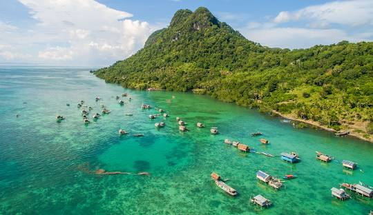

ini adalah halaman sederhana Tentang Pulau kalimantan
Asal usul nama Kalimantan tidak begitu jelas. Sebutan kelamantan digunakan di Sarawak untuk menyebut kelompok penduduk yang mengonsumsi sagu di wilayah utara pulau ini.[8] Menurut Crowfurd, kata Kalimantan adalah nama sejenis mangga (Mangifera) sehingga pulau Kalimantan adalah pulau mangga. Namun dia menambahkan bahwa kata itu berbau dongeng dan tidak populer.[9] Mangga lokal yang disebut klemantan ini sampai sekarang banyak terdapat di perdesaan di daerah Ketapang dan sekitarnya, Kalimantan Barat.
Pendapat yang lain menyebutkan bahwa Kalimantan atau Klemantan berasal dari bahasa Sanskerta, Kalamanthana yaitu pulau yang udaranya sangat panas atau membakar (kal[a]: musim, waktu dan manthan[a]: membakar). Karena vokal a pada kala dan manthana menurut kebiasaan tidak diucapkan, maka Kalamanthana diucap Kalmantan yang kemudian disebut penduduk asli Klemantan atau Quallamontan yang akhirnya diturunkan menjadi Kalimantan.[10] Terdapat tiga kerajaan besar (induk) di pulau ini yaitu Borneo (Brunei/Barune), Succadana (Tanjungpura/Bakulapura), dan Banjarmasinn (Nusa Kencana). Penduduk kawasan timur pulau ini menyebutnya Pulu
kembali ke Profil ←